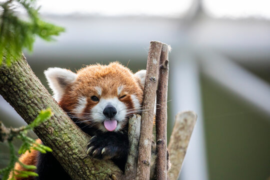
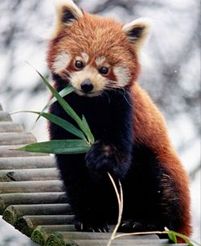
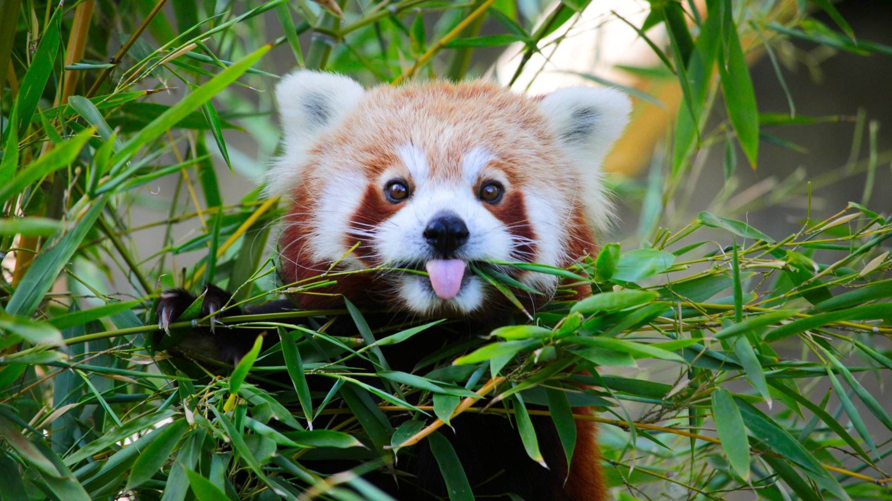

Acerca de


Los pandas rojos son animales muy habilidosos y acrobáticos que viven principalmente en los árboles. Viven en territorios, a menudo solos, y solo rara vez viven en parejas o en grupos de familias. Son muy tranquilos y se comunican mediante gritos estridentes.
Suele ser del tamaño del gato doméstico, aunque su cola grande y espesa añade 46 centímetros a su cuerpo. Utiliza su anillada cola como manta para arroparse en las frías cumbres de las montañas.
Este animal pasa la mayor parte del tiempo en los árboles, donde incluso duerme. Suele ser más activo por la noche, al atardecer y al amanecer, cuando sale en búsqueda de alimento.

El panda rojo ha dado muchos quebraderos de cabeza a los científicos a la hora de clasificarlos. Se le ha considerado pariente del panda gigante pero también del mapache, con quien comparte su cola anillada. En la actualidad, se les ha clasificado como miembros de su propia familia (Ailuridae).
El panda rojo está amenazado, víctima de la deforestación. Su hábitat se está reduciendo debido a la tala de árboles y a la agricultura.